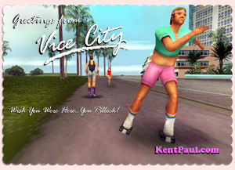
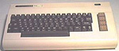

I used to have a mullet, but I'm okay now.
October 1, 2002
Hello, everybody. How are we all? Having a wonderful time of it?
Enjoying an amusing sojourn on the world-wide information super-highway web? I do hope so. You've stumbled across Kent Paul's 80's Nostalgia Zone, possibly the best site on the internet.
Just to clarify, like the banner says, the name is Paul, but I'm from Kent. Rather than being called Kent, like some idiot septic with a brother named Troy or whatever. Currently, I am spending time at an after care programme, having recently left primary, but I will VERY soon be back on my feet and out in the big bad world causing some serious trouble once more. I know I appear to be unfeasibly cheerful this month - this is because my doctor, a certain Dr. Perkins, has said if I can manage to be cheerful and not create what he calls an aura of insecurity and rage and inadequacy about myself and not insult anyone at all or lie for a whole month, then I can walk. I ain't turning soft or nothing, but I got to get back on the streets. The thing about Perkins is he's not bad for a screw, but I've done a lot of bird, because I'm very dangerous, and I once beat up a blind man in Dungeness High Street in Kent (still, he deserved it, 'cause he was staring at my bird's chest and anyway, I imagine he ain't reading this.). The other thing about Perkins is he is an absolute wanker and a little bit of a perv. Keeps asking me if I have feelings for my mum! I love my mum, but not like that. The other thing about Perkins is his wife looks like a moose having a bad hair day.
Anyways, I've done a lot of work on the memory banks this month.
Thinking about things. After all nostalgia's not what is was (I said this first) apart from where I'm concerned. But the 80's were definitely better than today. Look at the facts - I was on the top of my game. Now, I'm in a half way house. People knew how to dress - now they think wearing green smocks and straight jackets is the way to go, at least round my way. Back then, you knew what people was all about - money. Now, all people talk about is feelings and rubbish like that. All gets very confusing, whichever way you look at it.
When I left Kent for Vice City, I was a nobody.
A snotty little kid with a cheeky grin and a nasty line in tracksuits. By the time I left, I'd made it real big. I was a player. How did this happen? It was inevitable. You take an acne ridden compulsive liar from the Medway towns and drop him anywhere in America and he will come up smelling of roses. I knew everyone. I discovered most of the bands popular in the 1980's, but never got the credit. You see, I wasn't too interested in contracts. I was all about the music. It was like a passion for me. That and birds and drugs. They was my passions. Very original I was, I invented all of that crap.
What's more, is I just got sent THIS LINK by some moron because I mentioned the Degenatron thing last month. The bloke who wrote me is a right mug, clearly, and looks like he hasn't had so much as a hand shandy since 1987, so we've got that it common, I guess. But, please, bear in mind, now I spend all my time on computers, 'cause there ain't nothing else to do apart from try to watch the nurses getting changed, but in the 80's, I was a bit more interested with giving it very large portions.
Two new cards
|  | Send
Rollerskater Vice City Postcard |
| Send Shopper
Vice City Postcard |
September 4, 2002
My memories are priceless! Only I have to pay for them!
Popular from Dungeness to Missouri*
Quite a poetical introduction, and that's because I'm in quite a poetical mood. Well, I have to be honest, first up, I've got to apologise to Mrs. Perkins. She's not a dog at all. She's really quite attractive if you like the larger lady, and I also have to admit I was joking when I said that I had had her. I never had her. In fact, right, I think her husband, the esteemed and caring Dr. Perkins is right when he says his wife has never been unfaithful to him during a successful 30 year marriage and they have raised five lovely children and that is exactly the kind of thing you can get too, if you play by the rules.
Only, let's be honest, playing by the rules was never Paulo's style. I was a player. Not a referee. Seriously, I'm sorry for any offence I caused and everything, but do me a favour? I mean, Paul, from Kent, aka Kent Paul. I was the main man back then and when I get back on my feet, I'll be the main man again, and not writing apologies to shrinks or their fat wives, who I definitely could have had. But, well, back to me.
Not the best month for Paulo. Not too good at all, in fact. Got a bit of a knock back on this night club I was going to run. The 80's are back. You don't need me to tell you that, and I was going to be running this very fashionable little exclusive discotheque down in the Isle of Thanet, but the funding fell through. Stupid pillock. So, I've decided to spend an extra month in the after care. Face up to a few things. That demon grandiosity, Perkins calls it. I call it ambition, mate. The thing that made this country great. Gave us an empire. After all, we invented football, but we never win the bloody world cup, do we?
So, anyway, back to memories. I had a right funny hair cut back then. Looked like a proper pillock. But what you going to do? I don't make the rules, I only break them! And it seems you people are loving Kent Paul's Nostalgia Zone.
A lot of people came here last month, and not just family. (Hi mum!) I even got a letter last week.
From a certain JeffJohnson234@hotmail.com
Dear Kent,
I'm a big 80s fan. Loved your website. I live in Missouri. Where is Kent? We have a lot of corn here and we all drive cars. Do they have cars in Kent? Will you be my friend? I'm very lonely. I've got a big knife and I want to cut myself. I love goth music. And old televsion shows. Anyways, I was watching cable all last week, and I noticed you made a couple of errors. First - the family was called the Chesterfields, not the Dawkins. And then, you say the little kid was 35, but in fact he was 42. That's why he kept saying "but I'm 42." Because he was. He didn't say "I'm 35." I mean, I think he might have, but only when he was. Also, he was an investment banker not a bond trader as you have it on your website, which is wrong. I don't think you can really call yourself a fan of Five of Us. I've been to lots of conventions. And I still have a lunchbox. Please write back.
Keep on trucking!
Jeff.
Well, thanks Jeff. You prat. First up, I'm called Paul. I'm from Kent, near London. Second's, I don't care. That show was crap. Third's, no, you can't be my friend. Fourth's I hope you are in prison or something. Am I making myself clear?
As you can see, I'm the talk of the internet! Wonder how many people went to see Darren's ponce site? Wonder how many debates he sparked up? Not many. For your information, Darren's doses have been upped and he's back in the padded cell. Revenge, I call it. Don't mess with the beast, as my old boy used to say.
So, anyway, I was remembering, right, how things was and stuff. And they were really pretty good. Had a lot of fun. I was in Vice City as a major player in the record business, working with all of the top acts as an uncredited executive producer and creative influence, but I fell in with the wrong crowd. Myself. Know what I mean?
In Vice City, we had the lot, nightclubs, muggers, psychos, lunatics, self help gurus, porno stars.
But maybe you know about that already. It was a fabulous place. Real smart and all that fancy architecture. But there was a nasty side. Some very dodgy characters. Villains I call them, although Perkins calls them sociopaths or people with low self-esteem and a lot of weaponry. Make your own mind up. Times were easier back then, because we all knew what was going on. Make a load of money. Use it to borrow a load more money. Buy a lot of really expensive stuff on the never never, then go bankrupt. A simple life, much better than this crap, Perkins.
This month's postcards.
2 more photos I found... If you're a real man, you only travel by helicopter.
| Send
Helicopter Vice City Postcard |
| Send Vice
City Postcard |
August 1, 2002
More from the 80s as they really were
(officially rated the most popular site on the internet in East Kent and Dungeness)
Ha ha—stick that in your pipe and smoke it.
They said I had a five minute attention span, but they were wrong. Kent Paul is back with more of my exciting and amusing remin, remini, well, my memories of the 1980s. The decade of decadence. A time when entertainment wasn't watching a TV show or going to the movies*, but was manipulating a plastic cube until all of the colours were in the same place.
Well, to those who enjoyed last month's website**, I can assure you it's only going to get a lot better. For starters, I'm getting the hang of this HTML lark, and for seconds, now that the tranquilizers have worn off, my memory is flooding back. Some of them ain't too happy, and all. But most of them are funny as anything. Especially for me.
But it's not just about me, it's also about the 1980s.
And that's what this site is all about. The 1980s and me. When I was in Vice City I showed the yanks a thing or two about being a geezer. A proper geezer from Kent, not some idiot from Essex. Down at the Malibu every night, I would hold court like a man with a court in his hand and I also knew lots of powerful people. Including some really nasty ones, because I'd be lying if I pretended I kept my nose entirely clean. That was never my style, I was too smart for that, even though it did all end up with me making a website for 13 people to enjoy while I do the loast of my time in my aftercare programme, which is great and everything and to be honest, all them times were about lies and the person I lied to most was myself and I really have to apologise to someone I care about a lot—me, for wasting everything and throwing it all away and looking for the easy way out and so on and so forth, but well, I promise you, I knew a few people and had a right laugh, I can promise you that.
Anyway, Vice City is still going strong, if you like beaches and inane half-wits and guys called Geraldo, but it ain't what it was. Centre of the known universe back then and a right laugh. From the Malibu to Prawn Island and back again. From fancy parties to even fancier hotels, I was everywhere and you tell me I'm making it up? You tell me I'm deceiving myself? You tell me I never amounted to nothing? I tell you to stick it, Doctor Perkins. I was a player. Not some pillock in a white coat handing out pills to a bunch of burnouts. You're a loser, mate. A loser and your wife is a dog. And I've had her.
* = Before you write in and complain, I'm speaking metaphorically. I know movies and TV were popular in the 1980s.
** = Last month, 13 people visited KentPaul.com, and I only knew 6 of you. So that means I didn't come bottom of the after care programme. That was that pillock Darren with his stupid drawing. To check out what a wally Darren is click here.
Here's 2 more postcards.
The lot of you people seemed to like the last one, so I made more.
| Send
Downtown Vice City Postcard |
| Send
Rollerskater Vice City Postcard |
July 1, 2002
"Remembering the time when a dollar was a dollar, a song was a song and foreign policy meant invade first, ask questions later."
I don't know about you, but I just love the 1980s.
Always have done. Well, at least since 1990. And I don't think I'm alone. I mean, I am alone now, which is why I've got time to make this website as part of my therapy, but, well, isn't the internet great? That's one thing we didn't have back in the 80s. there's loads of other things we didn't have, too, like a sense of concern for our fellow man, or sports utility vehicles. But to find out more about that, you'll have to wait for my car section, which will come as soon as I figure out how to do the HTML. But seriously, if you'd told me that I'd learn how to use a computer. Well, in 1986 I didn't even know what a computer was. Or I did, but I thought computers were for squares. And they were, because if you were hip, you were in a club, like the Malibu. You weren't spending your time in an after care program, learning skills to suit you in the new economy. I mean, this is great and I'm really positive and everything, but, I'll be honest with you, things were better in the 80s. You knew where you were. It was a great time, a time when 'bribe' and 'corruption' and 'man made fibers' weren't dirty words. Great times. And great memories. Memories we can all share. Apart from really young people. Or dweebs! Or people who forget everything, like I tried to. Well, not forgotten and certainly not forgiven. That's what they told me in court and that's my message to you. We won't forget you and we won't forgive you, for making us all victims. Fashion victims!
I was maybe the worst fashion victim in town,
and I was in a town full of them. Probably the most hip, happening and certainly hot place in the whole of the 1980s. Vice City. Oh, I know Vice City is still around today and having something a revival as corruption and depravity come back into fashion, but in the 80s it was something else. The place was on fire. Sometimes literally. When I first arrived there it was a thriving metropolis, and despite my best efforts, it still stands. I don't think I could ever claim to have been king of the city, (my therapist complains a lot about my grandiosity, whatever that means) but certainly I was the crown prince and for a while, I was also the court jester.
Anyway, enough about me. And back to the 80s.
And tell all your friends about this site. If enough people visit, I'll win a prize from my guidance counselor.
Oh, and here's a little e-postcard that I just learned how to make.
Send it to your friends, if they're into this sort of thing.
| Send Vice
City Postcard |
You are visitor number
ESRB PRIVACY ONLINE CERTIFIED PRIVACY STATEMENT